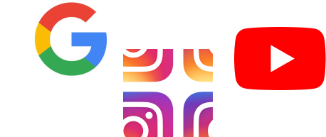
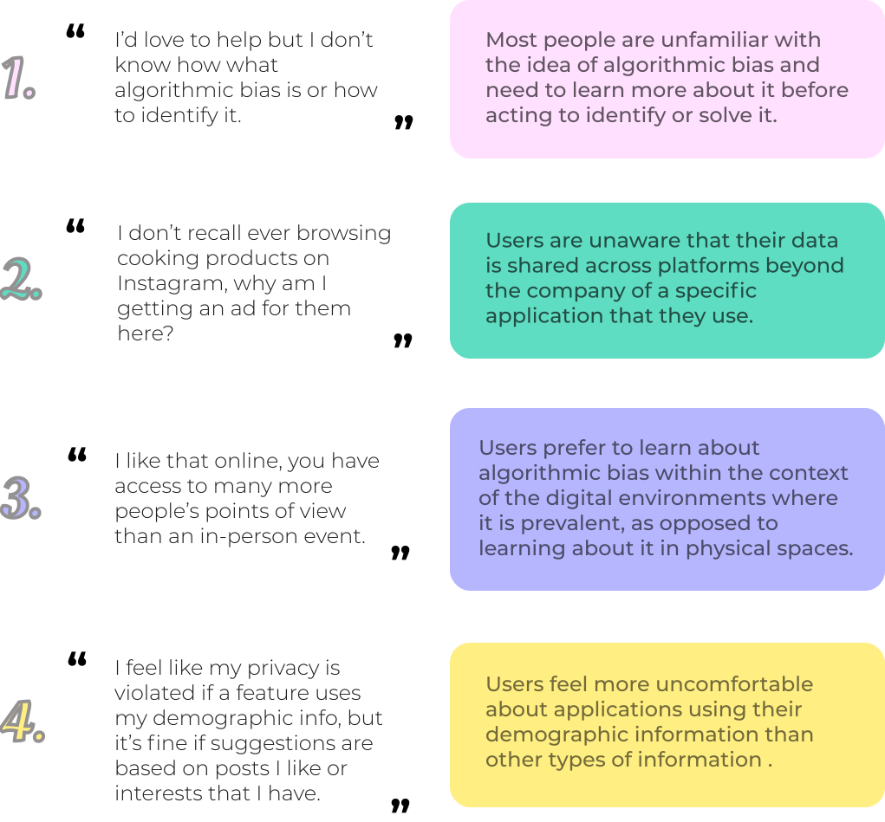

overview
Amos is a user research project and proposal aimed at solving the increasing problem of algorithmic bias in social media. Through an investigation of our platform, Instagram, along with members from our target audience, my team identified that users lack a concrete understanding of algorithmic bias and the way their personal data is used. To tackle these issues, we propose Amos, an extension for instagram that adds a bias downvote button to posts.
problem
My team worked to answer the question:
How might we use the combined efforts of the college student community to identify algorithmic bias in social media?
We focused on understanding users’ relationship with algorithmic bias and discovering how we might help them learn about it and identify it within the context of Instagram.
methods
We began with background research, using a combination of informational and experiential activites with a variety of social media platforms to learn about stakeholders in the project and inform our own understanding of algorithmic bias.
To begin working towards our solution, we utilized generative think-aloud interviews, where we talked to four college students with varying experiences with Instagram and varying familiarity with algorithmic bias.
We also conducted contextual inquiry interviews, where we again interviewed four new college students from various colleges in the context of where and when they would use Instagram in their everyday life.

By going through each of interview notes as a team and creating an affinity diagram, we synthesized our findings, identified our priorities, and generated insights that would inform the direction our solution would take.
With a better understanding of our target users and the problem space, we moved to brainstorming possible solutions using storyboards that each correlated to a specific user need. Below are a few storyboards that I created along with a wireframe of a brower extension solution.
We created a variety of storyboards; some dealt with safe ideas that users would likely be comfortable using, while others were more unfamiliar and risky. To reaffirm that our ideas targeted actual user needs, we utilized a speed dating interview technique to get feedback from another four college students on each of the storyboards. All of our interviewees converged on the idea of “Flag Upvoting” that I storyboarded above, since they felt that it most directly targeted their need to learn more about algorithmic bias in an accesible way.
key quotes and insights
solution
Using the insights we generated from all previous research stages, our team decided on what we believe is the most effective approach for tackling our problem statement: an Instagram bias-flagging extension called Amos.

In addition to liking, commenting, sharing, and saving, users also have the option to downvote a post they believe is affected by algorithmic bias.
Users cannot see how many others have downvoted the post, which prevents them for downvoting due to a herd mentality rather than an identification of algorithmic bias.
However, when a certain number of downvotes is reached, users can see a “Bias Alert” banner which brings further attention to a post and frames it as another example of algorithmic bias to learn from.
Upon setup, Amos also presents users with a screen explaining what algorithm bias looks like and begins to discuss how they might
identify it for themselves.
This page can be returned to at any time and encourages further encourages users to use the flag button for its intended purpose.